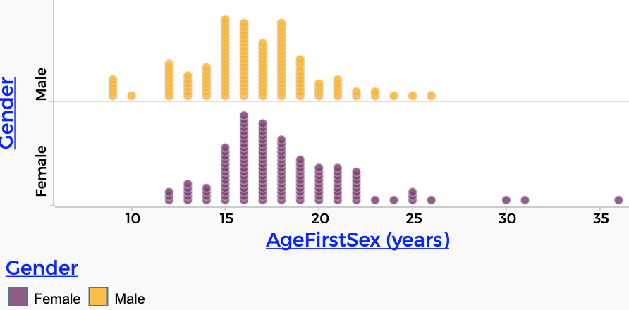

Data Portals Overview
The next few chapters describe some data portals you can use to get data for analysis. In a CODAP data portal, you can pick what attributes you get, which cases you will choose from, and/or haw many cases you will download.
We use these portals because some datasets are so huge that it’s impractical to work on all the data at once. The BART data portal, for example, has over 40 million cases. The portals also help you get clean, pre-organized data, so that you can get to the data analysis more quickly.1
Making these choices is also a data move in itself: it’s filtering in advance.
Census/ACS data portals
These two portals—used in the assignments and the project in the lessons—supply you with data about individuals from the United States Census and the American Community Survey (ACS, also part of the Census).
BART data portal
This portal is a window into public transit in the San Francisco Bay Area. You get ridership numbers for every hour beween every pair of stations—for four years, from 2015 to 2018 as of this writing.
Can you see the commute in this graph?

NOAA data portals
This chapter describes two related portals that get you data direct from the National Oceanic and Atmospheric Administration (NOAA).
You pick weather stations and retrieve, for example, temperatures or precipitation. You can get daily or monthly values.

NHANES data portal
Remember the data where we got the heights of 800 5- to 19-year-olds? It came from this portal. With the portal, you can change how many people you get, and what information you retrieve.
Does it really include data about having sex? You bet:

In real, professional data science, getting the data in shape for an analysis is often most of the work. There is still plenty for you to do here in organizing your data; making the portals is part of a reasonable balance for learners.↩︎